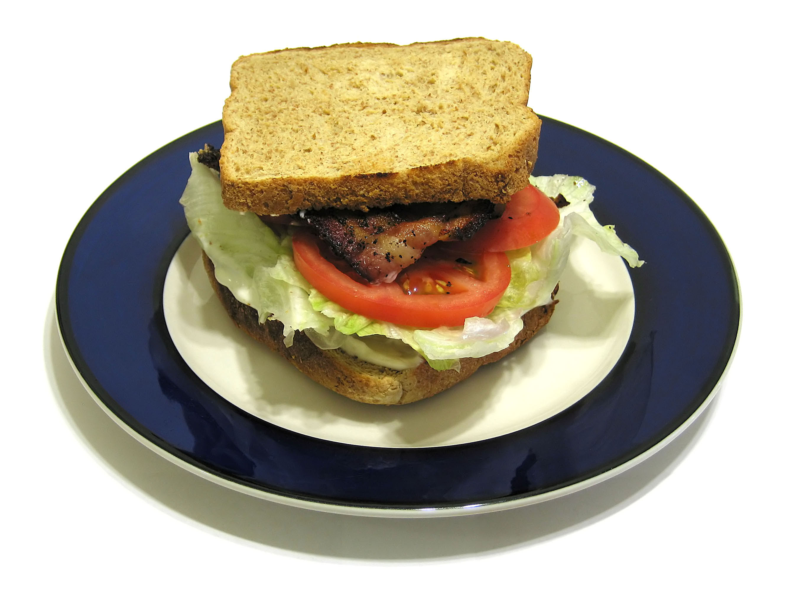

BLT (Bacon, Lettuce, Tomato)
Home

Description
This is a quick and healthy recipe using easily available ingredients.
The result is a quick and delicious sandwich in under 15 minutes.
Ingredients
- Bacon
- Lettuce
- Tomato
- Sourdough Bread
- Mayonaisse
Steps
- Cook bacon to your preference (crispy is better).
- Lightly spread mayo on both sides of sourdough bread.
- Place lettuce on bread at bottom of sandwich, then tomato, bacon and the final piece of bread.
- Enjoy!